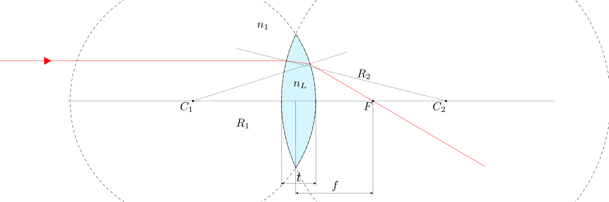
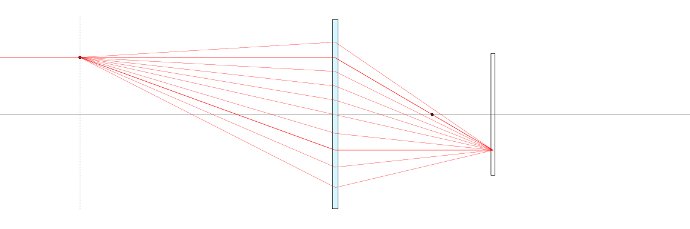
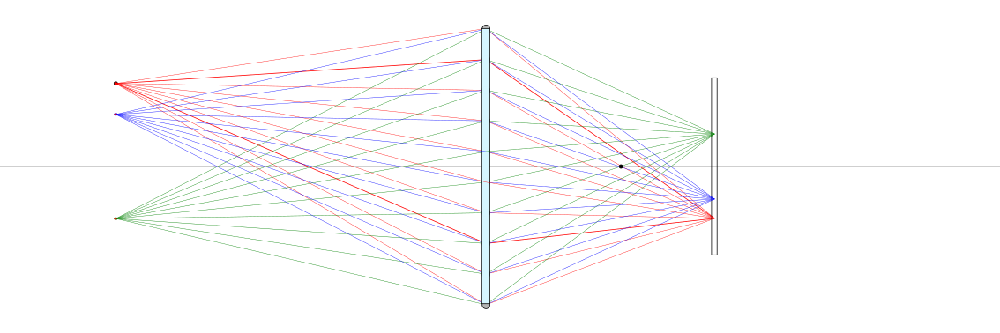
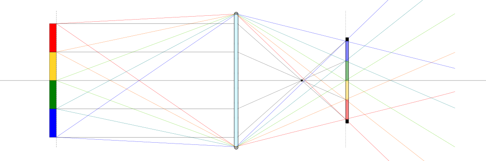
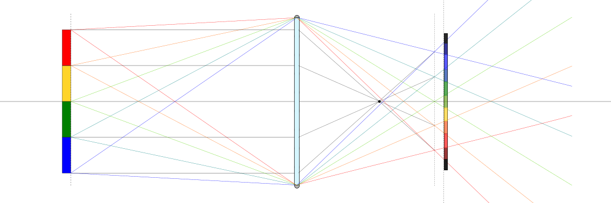
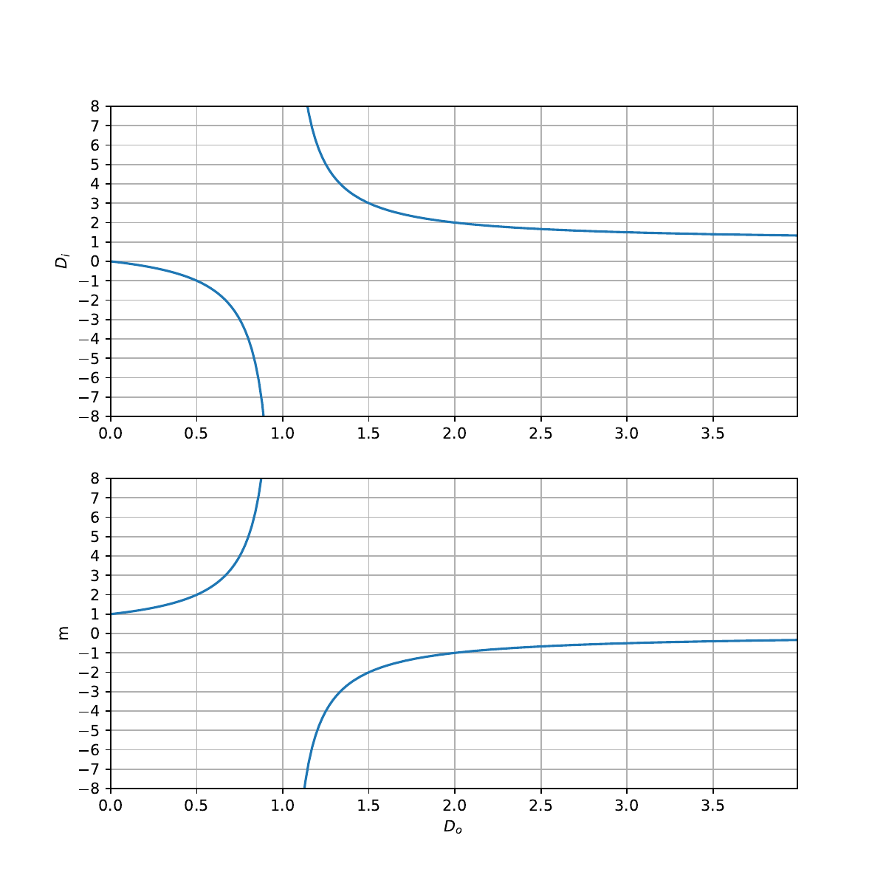

22.3. Lenti e strumenti ottici#
Lenti sottili sferiche:
caratteristiche
tipi: conv
Strumenti ottici e caratteristiche:
distanza focale
ingrandimento
messa a fuoco
apertura - diaframma
tempi di esposizione - otturatore
profondità di campo
Problemi:
aberrazione
…
L’occhio umano
22.3.1. Lenti sottili#
22.3.1.1. Equazione delle lenti sottili sferiche#
Raggi paralleli incidenti su una lente sferica covessa sottile convergono in un unico punto sull’asse della lente, chiamato fuoco della lente, a una distanza \(f\) dalla lente, chiamata lunghezza focale. Per una lente sottile esiste una relazione tra i raggi di curvatura \(R_1\), \(R_2\) delle superficie della lente, gli indifici di rifrazione del mezzo \(n_1\) e della lente \(n_L\) e la lunghezza focale \(f\),
 |
Dimostrazione
Nel limite degli angoli piccoli da poter ritenedere buona l’approssimazione \(\theta \sim \sin \theta \sim \tan \theta\), gli angoli dei versori normali alle lenti nei punti per i quali passa il raggio luminoso, a distanza \(h\) dall’asse della lente sono
Nel limite di piccoli angoli, gli angoli formati dai raggi luminosi entrante \(\xi_1\) e uscente \(\xi_2\) con l’asse della lente sono
Siano \(\theta_1\), \(\theta_{L1}\) gli angoli rispetto alla normale della superficie del raggio incidente entrante nella lente e trasmesso nella lente, \(\theta_{L2}\), \(\theta_2\) gli angoli rispetto alla normale locale rel raggio uscente dalla lente.
L’applicazione della legge di Snell fornisce le relazioni
mentre la geometria del problema
Quindi segue la relazione tra l’angolo \(\xi_2\) del raggio luminoso trasmesso dalla lente e l’angolo \(\xi_1\) incidente sulla lente,
Lunghezza focale. La lunghezza focale si ottiene per raggi incidenti paralleli \(\xi_1 = 0\), \(h_0 = h\). Il fuoco della lente si trova sull’asse, e quindi \(h^*_i = 0\). La distanza del fuoco dalla lente è definita lunghezza focale, \(d^*_i = f\). Utilizzando l’approssimazione per piccoli angoli, \(\xi_2 = \frac{h}{f}\), e quindi
ed è quindi valida per ogni valore di \(h\) e quindi per ogni raggio parallelo l’equazione delle lenti sottili
22.3.1.2. Formazione dell’immagine#
Dato un piano dell’oggetto \(\pi_o\) a distanza \(d_o\) dalla lente, i raggi luminosi provenienti da ogni punto \(P_o\) del piano \(\pi_o\) passanti per la lente sottile convergono in un unico punto \(P_i\) di un piano \(\pi_i\), detto piano dell’immagine, a distanza \(d_i\) dalla lente con
Questa condizione è la condizione di messa a fuoco, e comporta un rapporto di magnificazione dell’immagine
dove \(h_o\), \(h_i\) sono le distanze dall’asse della lente nel piano dell’oggetto e dell’immagine.
 |
 |
Piano dell’immagine
Esiste un piano, il piano di formazione dell’immagine, dove tutti i raggi provenienti da ogni punto di un piano, il piano dell’oggetto, convergono a un punto. In questo piano, l’immagine è a fuoco. Introducendo le approssimazioni (22.1) nella relazione (22.2) tra gli angoli dei raggi incidente e trasmesso dalla lente, si ottiene la relazione
Esprimendo la distanza \(h\) in funzione dell’angolo del raggio incidente \(\xi_1\),
si ottiene una relazione tra la distanze dall’asse dei punti dell’oggetto \(h_o\) e dell’immagine formata \(h_i\), la distanza dalla lente dell’oggetto e del piano di formazione dell’immagine \(d_o\), \(d_i\), della lunghezza focale e dell’angolo \(\xi_1\) dei raggi incidenti passanti per la lente dei raggi incidenti passanti per la lente,,
e quindi esprimere \(h_i\) come funzione degli altri parametri
In generale, i raggi provenienti da un oggetto arrivano in punti differenti su un piano generico a distanza \(d_i\) dalla lente, poiché la distanza \(h_i\) dipende dall’angolo \(\xi_i\), tenendo costanti gli altri parametri.
Nel caso in cui \(h_i\) non dipende da \(x_i\), tutti i raggi provenienti dallo stesso punto dell’oggetto convergono nello stesso punto del piano. Questa è la condizione di messa a fuoco, e definisce la relazione tra lunghezza focale, distanza dell’oggetto e distanza del piano di formazione dell’immagine,
Magnificazione
Nelle condizioni di messa a fuoco, si può quindi scrivere
o in termini della magnificazione
 |
 |
22.3.2. Lenti sempici#
Per lenti sottili semplici a geometria costante, e quindi lunghezza focale costante \(f\), la distanza \(d_i\) del piano dell’immagine dalla lente è determinata una volta nota la distanza dell’oggetto \(d_o\) che si vuole mettere a fuoco. Risulta quindi determinato anche il coefficiente di magnificazione dell’immagine.
todo Riogranizzare le sezioni
Caratteristiche obiettivi. La lunghezza focale di un obiettivo rappresenta la distanza focale più corta che si più ottenere con l’obiettivo mantenendo l’immagine a fuoco, o con la messa a fuoco all’infinito. Equiparando l’obiettivo a una lente sottile todo
Diaframma e otturatore. Nelle macchine fotografiche:
il diagramma regola l”apertura e di conseguenza l”intensità luminosa («la quantità di luce» per unità di tempo) che entra nell’obiettivo e va a formare l’immagine
l’otturatore regola il tempo di esposizione del sensore alla luce. Solo durante questo intervallo di tempo il sensore riceve la luce esterna, che oggi va a caricare elettricamente la matrice del sensore digitale, e una volta andava a impressionare la pellicola
Il prodotto di intensità luminosa e tempo di esposizione viene definita esposizione,
Così ad esempio:
un’esposizione troppo bassa non sarà in grado di impressionare «a sufficienza» il sensore e la foto risulterà quindi buia
un’esposizione troppo alta impressionerà il sensore più del dovuto, e la foto risulterà quindi artificialmente troppo luminosa. Al limite, un’esposizione eccessiva porta alla saturazione del sensore, che produrrà quindi una foto completamente bianca, o «bruciata».
todo Aggiungere immagine diaframma
Profondità di campo. La profondità di campo può essere definito come l’intervallo di distanza tra una distanza minima e la distanza massima nei quali gli oggetti risultano a fuoco. La profondità di campo dipende principalmente da 3 fattori:
l’apertura
la distanza dal soggetto
la distanza focale della lente
All’aumentare dell’apertura, al diminuire della distanza dal soggetto, e all’aumentare della distanza focale diminuisce la profondità di campo.
todo Aggiungere immagini
Tipi di obiettivo.
fisheye: \(7-16 \, mm\)
grandangolare: \(10-42 \, mm\)
standard: \(50-85-100 \, mm\)
teleobiettivo: \(100-800 \, mm\)
Lunghezza focale e angolo di campo. All’aumentare della lunghezza focale si riduce l’angolo di campo.
Effetto sulle proporzioni di oggetti a distanza diversa: angolo di campo, dimensioni relative e prospettiva. Lunghezze focali piccole rendono oggetti a distanza diversa di dimensione molto diversa (dovuto ad angolo di campo maggiore, e distanze minori dal soggetto principale)
Example 22.11 (Lente di ingrandimento)
Esprimiamo le distanze \(d_o\) e \(d_i\) come multipli della lunghezza focale della lente, \(d_o = f D_o\), \(d_i = f D_i\) per ottenere così un”adimensionalizzazione dell’equazione del paino dell’immagine
Data la distanza dell’oggetto \(D_o\), il piano dell’immagine si trova quindi a
e il coefficiente di magnificazione
Commento della formula. Si analizza ora l’andamento del coefficiente di magnificazione dell’immagine sul piano di formazione dell’immagine, in funzione della distanza della lente di ingrandimento dall’oggetto desiderato.
per distanza che tende a zero, \(D_o \rightarrow 0\), la magnificazione tende a zero, \(m \rightarrow 0\).
all’aumentare della distanza \(D_o\) la magnificazione aumenta fino a \(d_o = f\) dove il coefficiente tende a \(+\infty\). In questo di distanza, avvicinando o allontanando la lente si ottiene un ingrandimento minore o maggiore
oltre la singolarità, il coefficiente «riparte da \(-\infty\)», è negativo e aumenta fino a tendere a \(0^-\) per \(D_0 \rightarrow + \infty\); in questo intervallo di distanza, l”immagine risulta invertita
 |
todo Analisi casi limite (oggetto o osservatore nei fuochi?):
lente molto vicina all’oggetto
Sherlock Holmes, occhio molto vicino alla lente
…
Example 22.12 (Confronto tra obiettivi (di lenti semplici))
Vengono usati due obiettivi formati da una lente semplice sottile1 con lunghezza focale \(f_1 = 50 \, mm\) e \(f_2 = 200 \, mm\) per fare 4 foto mettendo a fuoco a distanza \(d_o\)
Si determinano le distanze del piano dell’immagine per ottenere una messa a fuoco e il coefficiente di magnificazione. Per l’obiettivo con lunghezza focale \(f_1 = 50 \, mm\)
\(d_o\) |
\(d_i\) |
\(m = d_i/d_o\) |
|---|---|---|
\(10 \, cm\) |
\(0.1000 \, m\) |
\(1.0000\) |
\(30 \, cm\) |
\(0.0600 \, m\) |
\(0.2000\) |
\(1 \, m\) |
\(0.0526 \, m\) |
\(0.0580\) |
\(3 \, m\) |
\(0.0508 \, m\) |
\(0.0169\) |
\(5 \, m\) |
\(0.0505 \, m\) |
\(0.0101\) |
\(10\, m\) |
\(0.0503 \, m\) |
\(0.0050\) |
mentre per il teleobiettivo con lunghezza focale \(f_2 = 200 \, mm\)
\(d_o\) |
\(d_i\) |
\(m = d_i/d_o\) |
|---|---|---|
\(10 \, cm\) |
\(-0.2000 \, m\) |
\(-2.000\) |
\(30 \, cm\) |
\(0.6000 \, m\) |
\(2.0000\) |
\(1 \, m\) |
\(0.2500 \, m\) |
\(0.2500\) |
\(3 \, m\) |
\(0.2143 \, m\) |
\(0.0714\) |
\(5 \, m\) |
\(0.2083 \, m\) |
\(0.0417\) |
\(10\, m\) |
\(0.2041 \, m\) |
\(0.0204\) |
Alcune osservazioni:
la distanza \(d_i\) negativa per lente con lunthezza focale \(f_2 = 200 \, mm\) e oggetto distante \(d_o = 10 \, cm\) dovrebbe far pensare che non sono rispettati i limiti del modello, o che si incontrano limiti tecnologici nella realizzazione della messa a fuoco di un oggetto troppo vicino per un teleobiettivo. La distanza minima di messa a fuoco di teleobiettivi - come di altri obiettivi - nelle applicazioni pratiche viene fornita sulle schede tecniche dell’obiettivo; anche la distanza dipende dal particolare obiettivo, si può pensare una distanza minima di messa a fuoco dell’ordine di \(1.5 - 2 \, m\) per i \(200 \, mm\), come reperibile per un obiettivo Canon2;
altri limiti tecnici per strumenti con una lente semplice derivano dalla distanza \(d_i\) necessaria alla messa a fuoco; gli obiettivi reali hanno più lenti per trattatare alcuni problemi che si avrebbero con una lente singola (aberrazione cromatica), e possono essere progettati per rendere l’obiettivo più compatto rispetto a quanto sarebbe richiesto dalla distanza \(d_i\) di una lente singola. Così, ad esempio un obiettivo Nikon con lunghezza focale \(800 \, mm\) ha una lunghezza di circa \(385\, mm\)3; i teleobiettivi rimangono comunque degli strumenti ingombranti (\(140 \, mm\) di diametro), pesanti (\(2.4 \, kg\)), costosi \(2000\)€ (2025), e quindi principalmente riservati a professionisti.
il fattore di magnificazione è determinato dalla distanza dell’oggetto \(d_o\), non è possibile compiere un ingrandimento. In seguito, nell’esempio Example 22.15 viene discusso un semplice meccanismo che permette l’ingrandimento dell’immagine (e quindi la riduzione dell’angolo di campo).
22.3.3. Lenti#
Example 22.13 (Messa a fuoco)
Example 22.14 (Auto-focus)
Per convoluzione
Per contrasto
Example 22.15 (Zoom)
L’esempio Example 22.12 sulle lenti semplici ha mostrato come il rapporto di magnificazione, e quindi l’ingrandimento, in quei sistemi sia determinato dalla distanza dell’oggetto.
Zoom: sistema afocale (modifica l’ingrandimento angolare) + lente focale (si occupa della generazione dell’immagine)
22.3.4. Lenti spesse#
- 1
Gli obiettivi usati nelle applicazioni reali sono formati da un gran numero di lenti, tutt’altro che sottili, ma qui possiamo provare a fare qualche esercizio. Dai risultati dell’esercizio, anche se ottenuti con l’approssimazione di lenti sottili, dovrebbero essere chiari alcuni limiti pratici nella realizzazione di obiettivi con lenti semplici:
- 2
- 3